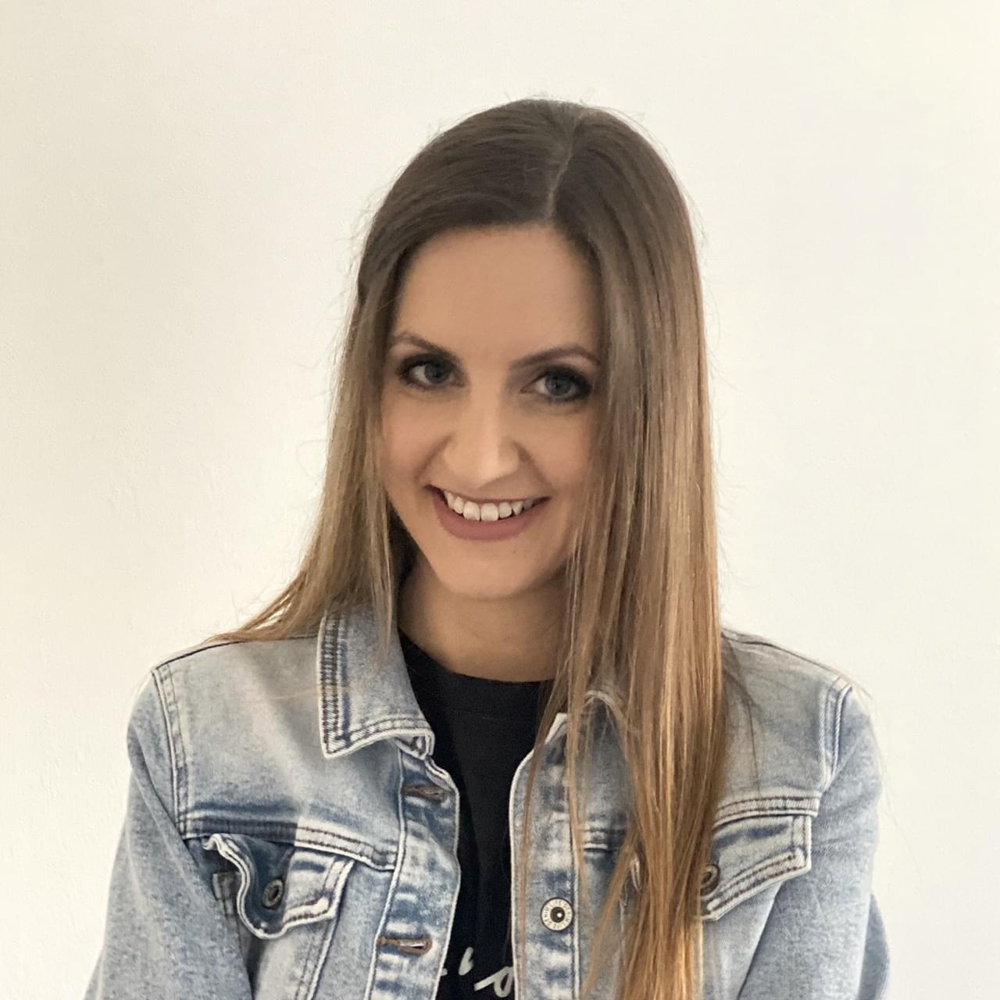
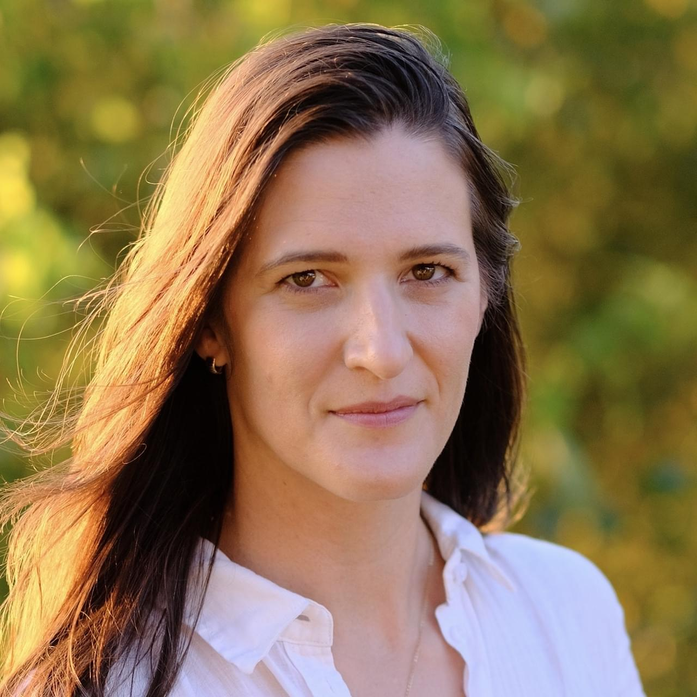
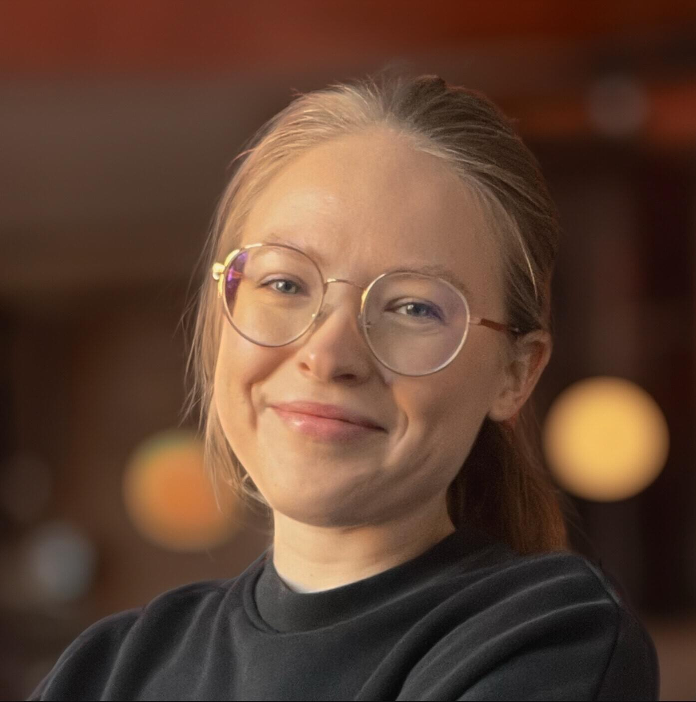
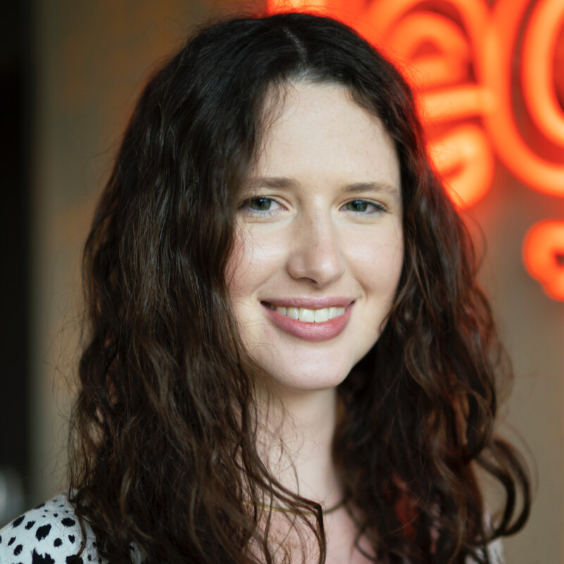
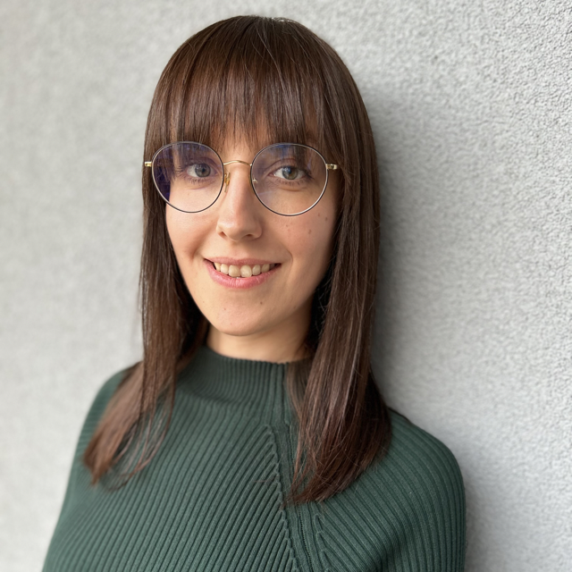
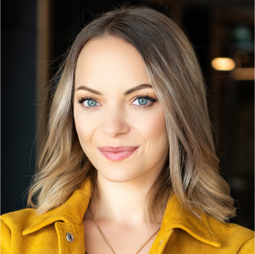

Pomysłodawczyni i główna organizatorka konferencji:

Katarzyna Szklarz
Senior UX Researcherka
Organizatorzy:

Patryk Barkowski
UX Research Lead
Teresa Bęben
Employer Branding Senior Specialist

Maria Chełkowska-Zacharewicz
UX Researcherka

Justyna Dudek
Employer Branding Specialist

Maria Dziedzic-Białkowska
UX Researcherka
Michał Idzikowski
Principal Software Engineer
Aleksandra Klein-Kalka
UX Researcherka

Justyna Woźniak
UX Researcherka

Justyna Zynek-Mahometa
UX Researcherka